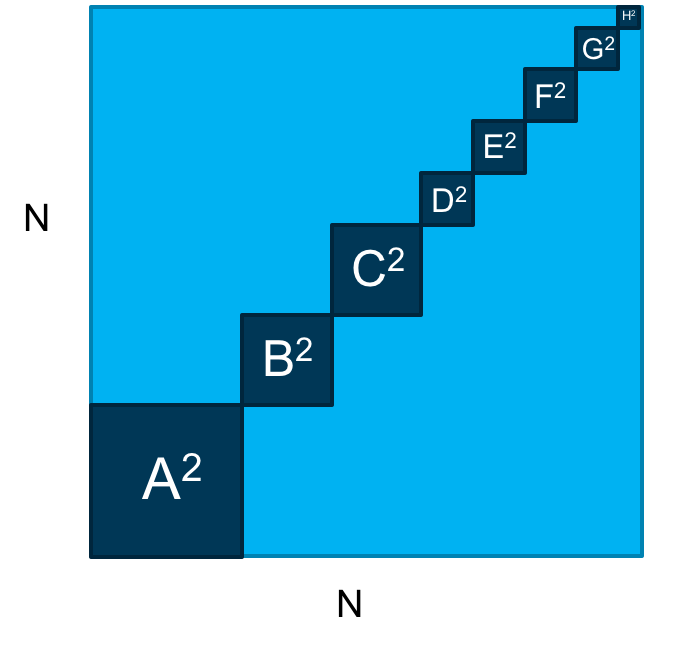
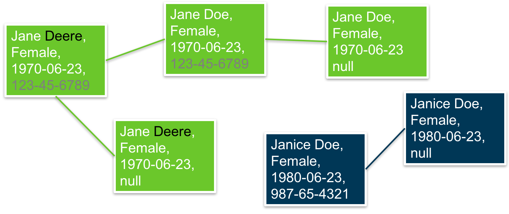

Education
- B.S. Industrial Engineering The Ohio State University
- M.S. Operations Research The Ohio State University
Professional Positions
- Director of Foundational Informatics - IBM Watson Health
- Data Scientist - Explorys
- Operations Research Analyst - U.S. Department of Energy
- Research Assistant - The Ohio State University
What Do You Build Models In?
Where Can I Learn More?
- Wes McKinney
- Hadley Wickham
- Mike Bostock
Probabilistic Patient Matching
Why Match?
- Determining which records belong to a person is a challenging problem
- Connecting records to the right person is vital
- Making medical decisions with a subset of information is sub-optional
- The proliferation of available data exaggerates this problem
- Wearables (Fitbit / Apple Watch)
- Genomics Data (23andme)
- Social Data (Facebook, Twitter)
Patient matching is hard.
- Conflict within one EMR (multiple visits, errors in registering data)
- Multiple databases (inpatient, ambulatory, data warehouse)
- Missing information (laboratory feeds, insurance claims)
- Data entry errors (humans make mistakes)
So how do we match patients?
Step 1: Clean the data
- Standardizing data fields is important
- SSN with or without hyphens?
- Understanding dirty data is important
- Invalid SSN, hospital addresses, default birth date
Step 2: Group similarish patients
- Comparing all pairs of records is impractical
- Reducing the number of comparisons is necessary

Step 3: Score pairs of records
- Methodology based off of Felligi Sunter paper from 1969!
- Calculate a numerical score based on different features of the records
- Frequency of values is also important
- Match on 'Miller' is less evidence than a match on 'Manilich'
Step 4: Create Network
- Not sufficient to look at pairs; patients can have many more than 2 demographics
- Creating the network is simple, validating it is hard
- “Connected components algorithm”
